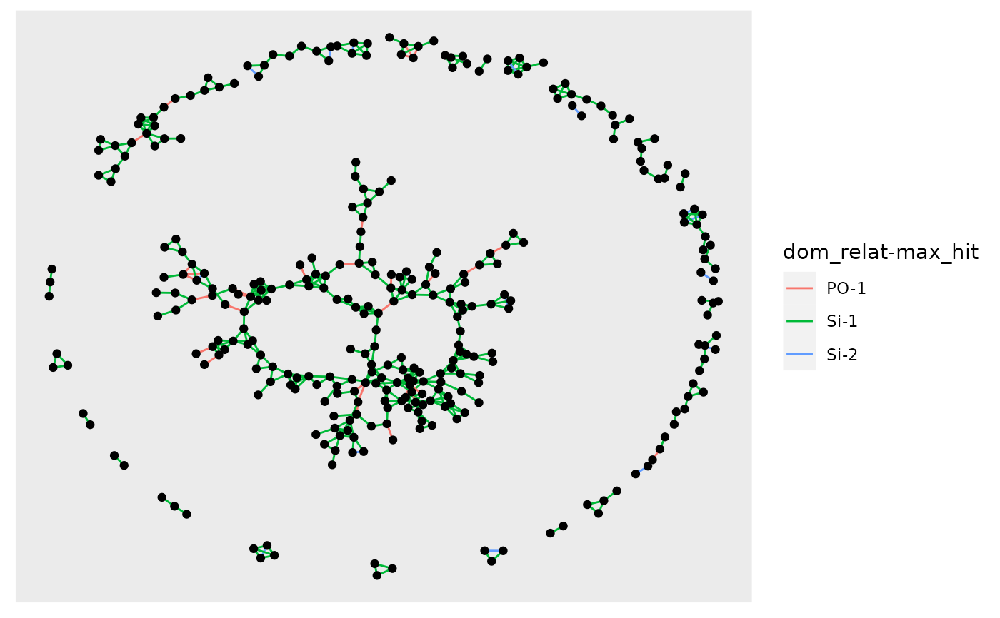

plot_conn_comps.RdThis is a simple wrapper for some tidygraph/ggraph functions that will let you find the connected components of a graph in which the related pairs are connected by edges. It also makes a plot of them.
plot_conn_comps(Pairs)the tibble that comes out of compile_related_pairs().
For this function it must have, at least the
columns id_1, id_2, and dom_relat.
This returns a list with two components:
conn_comps: a tibble with three columns:
name: the name of the sample
cluster: the index of the connected component the sample belongs to
cluster_size: the number of samples belonging
to that cluster
plot: a ggraph/ggplot plot object showing the connected components as vertices with
edges between them.
Note that it appears that the 'ggraph' package must be loaded for the plot output of this function to print correctly.
# get a Pairs tibble from the stored data
Pairs <- compile_related_pairs(species_1_slurped_results_1gen$samples)
PCC <- plot_conn_comps(Pairs)
# look at the conn_comps:
head(PCC$conn_comps)
#> # A tibble: 6 × 3
#> name cluster cluster_size
#> <chr> <dbl> <int>
#> 1 F48_0_28 1 3
#> 2 M49_0_55 1 3
#> 3 M49_0_56 1 3
#> 4 F48_0_4 2 23
#> 5 F49_0_49 2 23
#> 6 F50_0_17 2 23
# if you want to print the plot, that seems to require
# loading the ggraph library
library(ggraph)
#> Loading required package: ggplot2
PCC$plot
